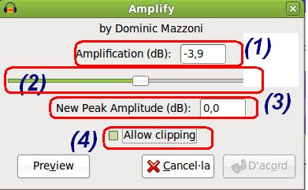
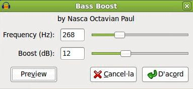
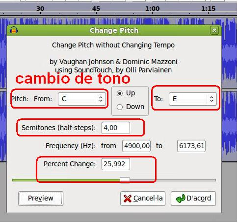
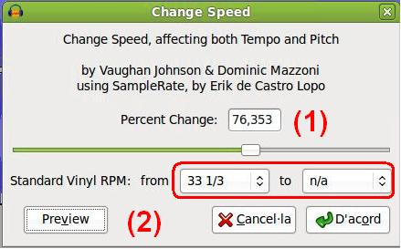
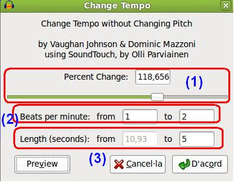
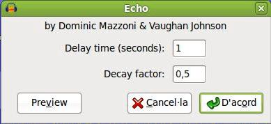

Edición de Audio y video
2. Efectos - Primera Parte
En este apartado se muestran la finalidad de diversos efectos de las que dispone el Audacity y algunas consideraciones sobre los mismos. Definiremos los efectos: amplificar, amplificar bajos, cambiar tono, cambiar velocidad, cambiar tempo y el eco.
| Recomendación: Antes de aplicar un efecto, si el mismo dispone de un botón de previsualización (preview), escuchemos la función y resultado del mismo antes de aplicarlo a la línea de tiempo. |
-
Amplify (Amplificar): Este efecto permite aplicar un factor de amplificación a la intensidad del sonido seleccionado. Este factor puede ser positivo, para incrementar la intensidad, o negativo, para reducirla. Para ello puede cambiar el valor en Amplification (db) (1) o utilizar el deslizador (2). Si seleccionas (4) Allow Cipping (permitir recorte) no te permite amplificar por encima del rango de frecuencias de onda, ello evita que tengamos distorsión. La finalidad el New Peak Amplitude (Nuevo pico de amplitud) es la de indicar qué nivel de intensidad máximo que se desea que tenga el pico supremo del sonido seleccionado.

- Bass Boost... (Amplificar Bajos o Realzar Graves): Este es un filtro seguro y suave que puede amplificar las frecuencias bajas mientras deja la mayoría de las otras frecuencias sin modificar. Es más efectiva si no intentas elevar demasiado; generalmente 12 dB es suficiente. Es muy válido para aquellos ficheros con alto contenidos de agudos y requerimos realzar los graves o bajos. Este efecto le da o le reduce ganancia en dB a tu pista de audio, para que se noten los cambios debes aumentar o disminuir 3 dB como mínimo sino no será perceptible el cambio

- Change Pitch (Cambio de Tono): Este efecto cambia la frecuencia de la pista de audio (es decir el tono) sin cambiar su velocidad. El cambio de tono o "pitch" es una de las herramientas más utilizadas en el ámbito de la música, debido a que gracias a ella puedes afinar instrumentos. Un ejemplo práctico es realizar los cambios con nuestra propia voz, subiendo y bajando tonos, para observar los resultados diversos que nos producen.

Los cambios de tono utilizan el sistema de notación Americana y van desde la letra C (Do) hasta la B (Si). Igualmente, puedes modificar los semi-tonos (En una pista con tu voz, no quieres que cambie el tono en el que estás cantando, debes subir o bajar el doble de frecuencia en hertz o bajar o subir 12 semitonos). Puedes modificar las frecuencias o cambiar el porcentaje en los cambios de tono. Recomiendo utilizar la previsualización (preview) para observar el resultado antes de aplicarlo.
-
Change Speed (Cambio de velocidad): Este efecto cambia la velocidad de reproducción, y ello provoca el cambio del tiempo y del tono. Simula los cambios de velocidad de los antiguos discos de vinilo. La idea general de este efecto es aplicarlo a voces para distorcionarlas o para acelerar una canción en su reproducción y producir mezclas musicales.

Para utilizar el efecto dispone de dos herramientas: utilizar el deslizador (1) y modificar el procentaje de aceleración que deseas dar a la pista o, por otra parte, utilizar (2) los desplegables para simular los estándares antiguos de los discos de vinilo (revoluciones por minuto) para indicar la velocidad de giro.
- Change Tempo (cambiar tempo): Altera la velocidad de reproducción del fichero pero sin cambiar el tono, podemos realizarlo utilizando tres posibilidades que nos brinda el efecto. Cambiando el porcentaje de tiempo (1), si lo aumentamos no cambia el tono pero se incrementa la velocidad, no varía el tono y disminuye el tiempo de duración. En caso de disminuir el porcentaje se ralentiza la reproducción y aumenta el tiempo.

Otra opción (2) Beats per minute (compases por minuto) te permite cambiar el tiempo modificando la cantidad de compases. La tercera ocpión (3) nos permite modificar la duración en segundos de la zona seleccionada, desde el valor actual a la duración elegida.
- Echo (Eco): Un efecto simple de retraso. Este efecto repite el audio que has seleccionado una y otra vez, cada vez más suave. Existe un tiempo fijo de retraso (Delay Time) entre cada repetición.

Otro aspectos es el factor de decaimiento (Decay factor), un número entre 0 y 1. Un factor de decaimiento de 0 quiere decir que no existe eco, y un factor de decaimiento de 1 quiere decir que cada eco tiene tanto volumen como el original. Un valor de 0.5 significa que su amplitud es cortada la mitad cada vez, así que muere lentamente
Jo.R.C.A. 2004 - 2011

Edición de Audio y Video con Software Libre by José Ramón Cerdeira Alonso is licensed under a Creative Commons Reconocimiento-No comercial-Compartir bajo la misma licencia 3.0 España License